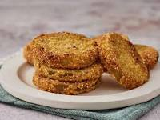

Fried Green Tomatoes

A Southern Classic
Fried green tomatoes are a famous southern dish. Green tomatoes are firmer and more tart than red tomatoes. Fried green tomatoes are exactly what they sound like, sliced green tomatoes, coated in cornmeal and then pan fried.
- 4 large green tomatoes, cut into 1/3-inch slices
- 1/2 cup all-purpose flour, divided
- 1/2 cup cornmeal
- 1 Tbsp BBQ rub powder, optional
- 1 tsp salt, divided
- 1/2 tsp black pepper
- 1/2 cup buttermilk
- 2 eggs
- 1 1/3 cups canola oil